国・地域の見分け方
- ドメインは.es
- 歩行者注意の看板は横断歩道の縞々が8本なのはスペインとアンドラのみ
- 赤い警告看板はSTOPの看板以外は縁が無い
- ボラードの反射板が黄色のものがある
- 「calle」はスペイン語で通り・街路の意味
- 背景色が黒色・青色のシェブロンがある
- 黄色の円柱型のポストがありCorreos社のロゴが描かれているポストがある
- 道路の線は基本的に白が多いけれど稀に黄色もある
見つかる標識
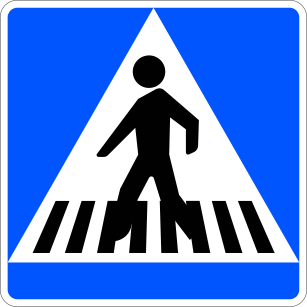
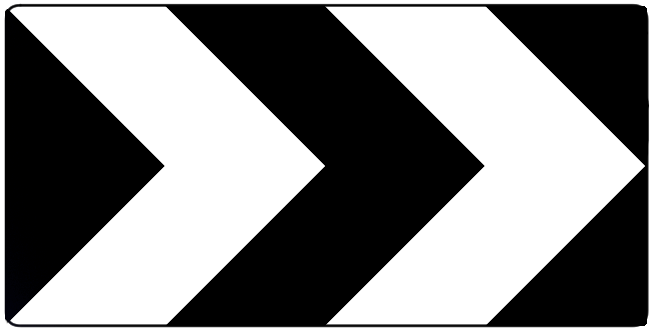
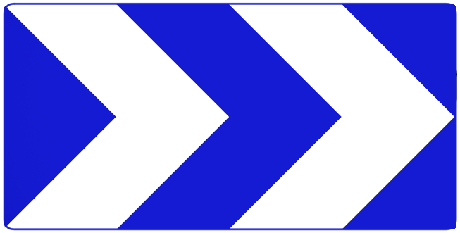
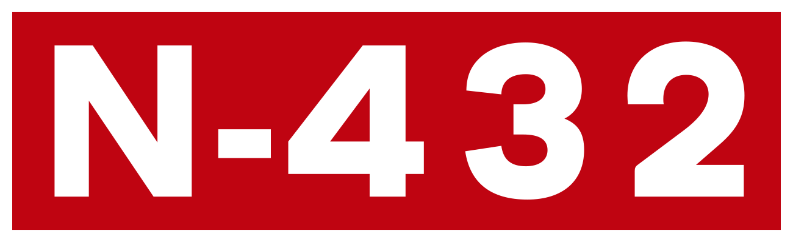
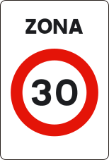
代表的な企業


黄色の円柱型のポストがありCorreosのロゴが描かれている(参考文献 Sociedad Estatal Correos y Telégrafos, S.A.)。
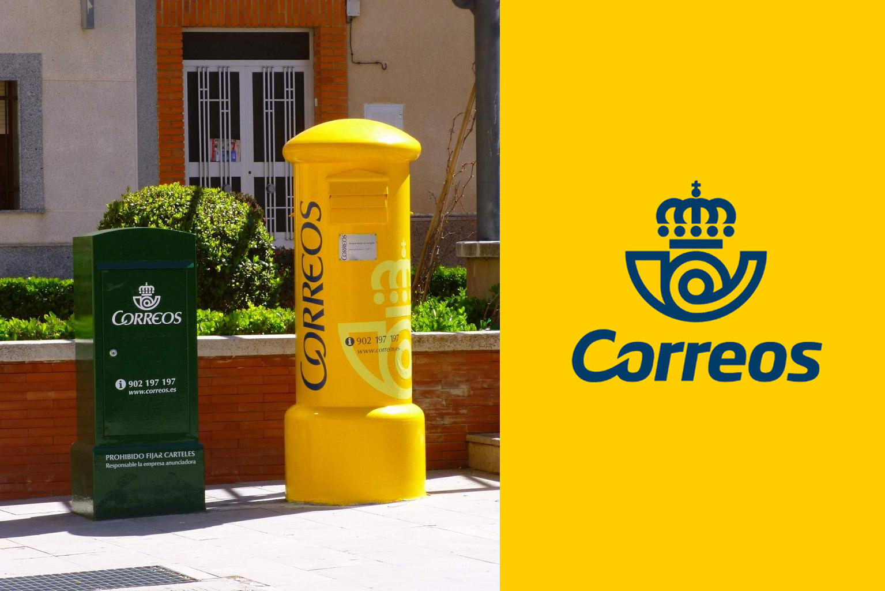
『CALLE』はスペイン語で通り・街路の意味。カタルーニャ語を使う地域では『CARRER』と書かれていることも。以下の右はカタルーニャにあるFree Software Streetの看板(参考文献 Free Software Street)。
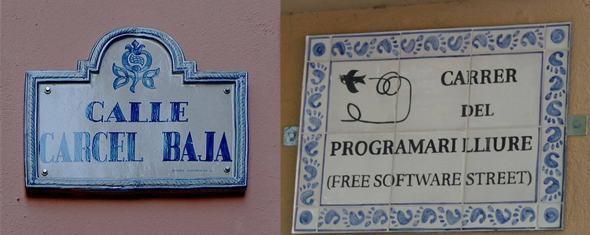
歩行者注意の看板は横断歩道の縞々が8本のものが多い。赤い警告看板はSTOPの看板以外は縁が無く、また細い長方形型の鉄のパイプを使って標識が建てられていることが多い。裏側から見た画像はこれ。


ポストのついでにボラードも黄色い。稀に少し見た目が異なるものもある。また、チリやアルゼンチンのフフイ州にも稀に似たボラードがあるのでボラードだけで即押ししないように。
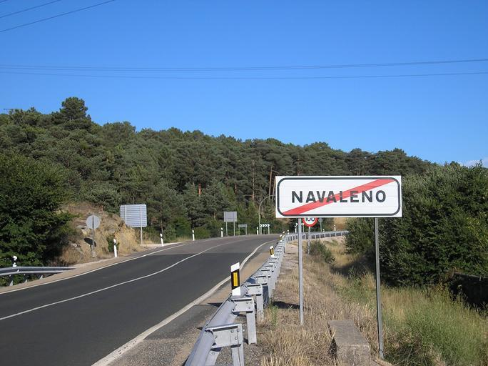
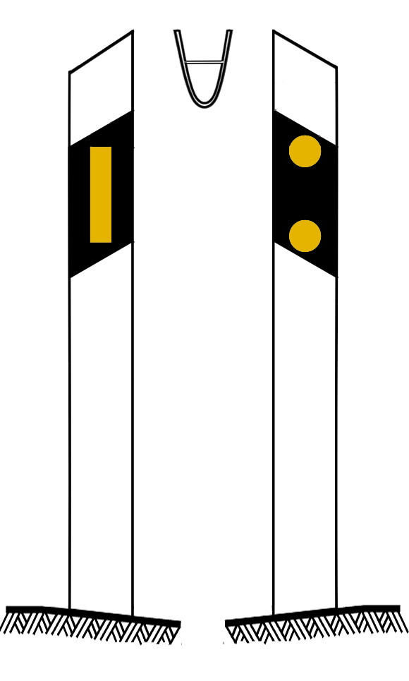
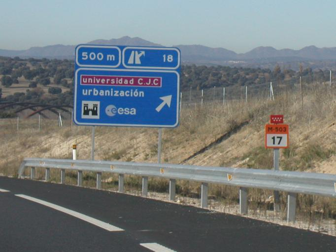
白黒と白青のシェブロンがある。ポルトガルは黒背景に黄色の矢印。他に青と白のシェブロンを使うのはフランスのみ。黒背景に白のシェブロンを使うのはイギリスとイタリア周辺の国(参考文献 Map of European Road Curve Chevron Signs)。この画像のようにシェブロンが白黒かつ標識やシェブロンの棒が四角い長方形ならばスペインかアンドラを考えてみて良いと思う。
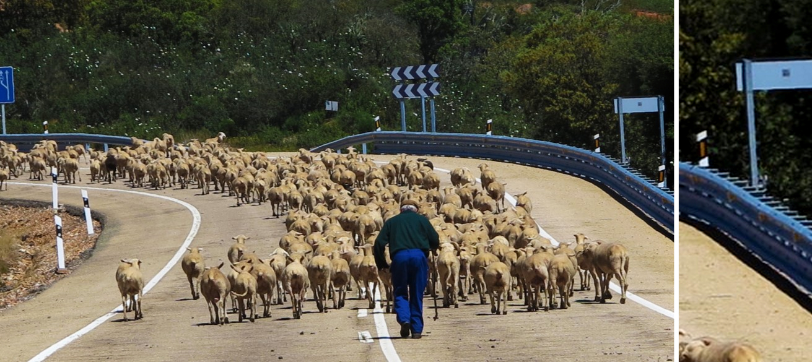

By Enrique Íñiguez Rodríguez (Qoan) - Own work, CC BY-SA 3.0, Link
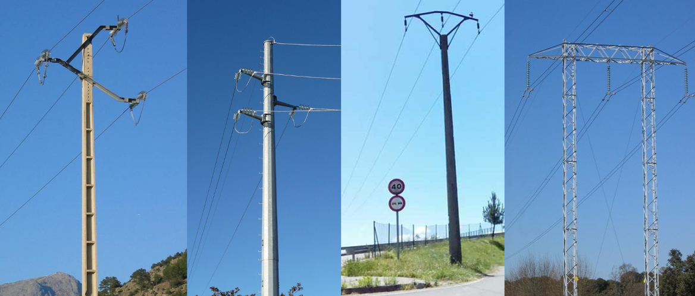
フランス瓦（F形瓦）とスペイン瓦（S形瓦）は製造方法は同じだが、フランス瓦が平板・スペイン瓦は半丸？
州・地域の絞り込み
- 複数言語が使用されている
- 東側ではカタルーニャ語が使用されおり通りが『CARRER』
- 西側ではガリシア語が使用されおり通りが『RÚA』
- 北側の一部ではバスク語が使用されおり通りが『KALEA』
- 最も一般的に見られる通り名は『CALLE』
- 市外局番の9XXの数字で地域を絞り込める
- ガリシア州や北の沿岸付近は緑が多い
- 環状道路と高速道路には都市を識別する文字が先頭についていることが多い
- 例）BIならばビルバオ付近
- スペイン領カナリア諸島にもスペインの標識とボラードがある


By Albertocsc - Own work, CC BY-SA 3.0, Link
分布はこのマップを参照してください。ちなみにCategory:SVG flora distribution mapsのページにて他の木の分布も見ることができます。
{kind=link}

By Original: Roke (Blank_Map_of_Europe_-w_boundaries.svg)Derivative work: Carnby - This file was derived from: Blank Map of Europe -w boundaries.svg: Polunin, O., Walters, M. (1985). A Guide to the Vegetation of Britain and Europe. Oxford University Press. p. 115., CC BY-SA 3.0, Link
{kind=link}

マルセイユ近くに生えてそうな松はスペインの東半分にしか分布していない。バレアレス諸島のような離島にも多い。
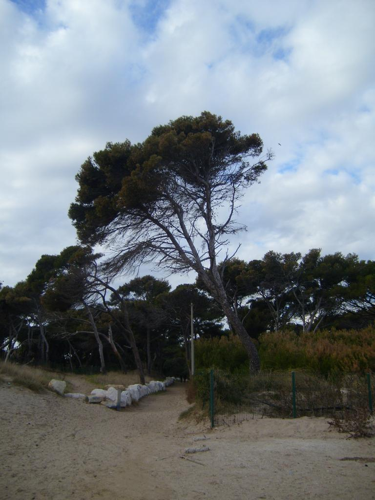
農業
アルメリア県では温室農業が盛んであり、とりわけ南東の海岸付近の白い場所はビニールハウスがいっぱいある。プラスチックの海と呼ばれているらしい(参考文献 アルメリア県)。
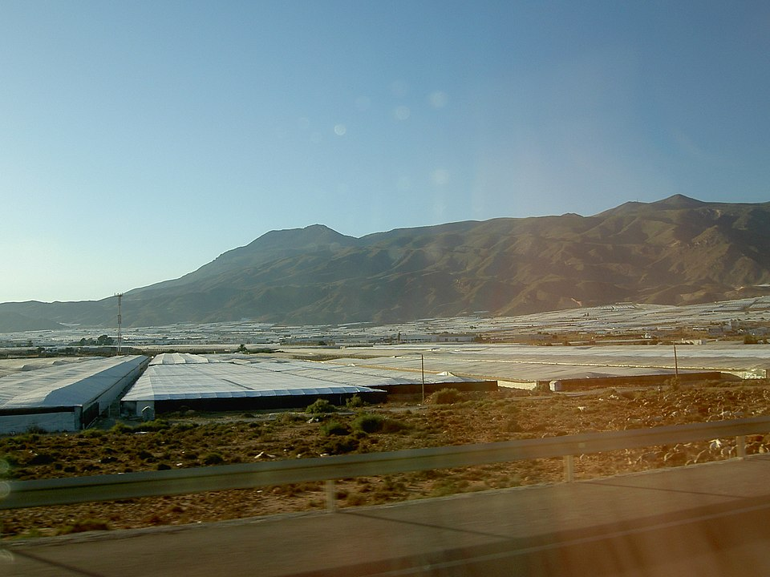
参考文献に示す3か所以外はほとんど田んぼは見つからない(参考文献 European Rice Cropland Mapping with Sentinel-1 Data: The Mediterranean Region Case Study)。
工業
- 日照時間が長い南半分のエリアでは太陽光発電施設が多い
都市・町の絞り込み
- アルメリア県では温室農業が盛んであり、とりわけ南東の海岸付近の白い場所はビニールハウスがいっぱいある
- ピコス・デ・エウロパ国立公園付近に石灰岩の山塊に挟まれた集落と道路がある(参考文献 ピコス・デ・エウロパ国立公園)
- アフリカ大陸の北岸にスペインの自治都市であるメリリャとセウタがある

De El Jim - https://flic.kr/p/4Kwtmh, CC BY 2.0, Enlace
代表的な企業の説明
| 企業名 | コード | 説明 | 決算 | 配当履歴 |
|---|---|---|---|---|
| Banco Santander | NASDAQ | スペイン最大手の銀行であり、隣国ポルトガルやスペイン語圏であるラテンアメリカ全域に展開する。 | - | Dividend History |
| Banco Bilbao Vizcaya Argentaria(BBVA) | NASDAQ | スペイン大手銀行だがルーマニアやラテンアメリカにも進出している。 | - | Dividend History |